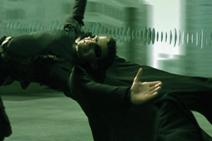
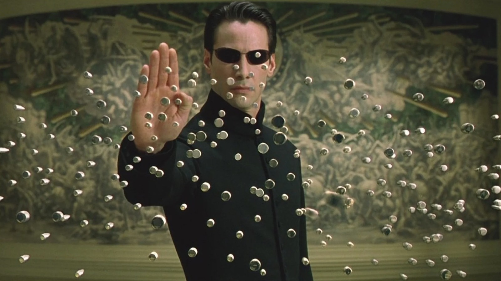

In 1999, The Matrix redefined the sci-fi genre, blending cyberpunk aesthetics, groundbreaking visual effects, and philosophical depth in a way that had never been seen before. Now, 25 years later, the film remains a cultural touchstone, influencing everything from cinema to video games, fashion, and even real-world discussions on artificial intelligence. But does The Matrix still hold up as a revolutionary sci-fi masterpiece, or has its impact faded with time?

With the rapid evolution of CGI, action filmmaking, and the rise of AI-driven technology, revisiting The Matrix in 2024 offers a fascinating perspective on its legacy and continued relevance.
Revolutionary Visuals That Still Impress: One of the most defining aspects of The Matrix was its groundbreaking special effects, particularly its introduction of bullet time—a slow-motion technique that became instantly iconic. At the time of its release, the film’s seamless blend of wire-fu martial arts and CGI set a new standard for action choreography.
Even today, the action sequences remain visually striking. The lobby shootout, rooftop bullet dodge, and subway fight are still some of the most exhilarating scenes in sci-fi history. While modern filmmaking has pushed CGI to new heights, the practical effects and innovative camera work in The Matrix ensure that it hasn’t lost its visual edge.
Themes That Feel More Relevant Than Ever: While The Matrix was originally seen as a thrilling action film with a cyberpunk aesthetic, its philosophical themes and social commentary have only grown in significance. The film’s exploration of reality, free will, and control feels more relevant in an era where AI, deepfakes, and virtual reality are blurring the lines between the digital and real worlds.
The concept of being "trapped in a simulation" has taken on new meaning, with many modern thinkers and tech leaders referencing The Matrix when discussing the potential of artificial intelligence and simulated realities. This ongoing discussion proves that the film was not just ahead of its time—it was prophetic.
The Legacy of Neo, Morpheus, and Trinity: The film’s characters remain some of the most iconic in sci-fi cinema. Keanu Reeves' portrayal of Neo, the reluctant hero who evolves into "The One," is still one of his most celebrated performances. Laurence Fishburne’s Morpheus, with his deep, philosophical monologues, and Carrie-Anne Moss’ Trinity, a symbol of strength and loyalty, remain fan favourites.

Their performances, combined with the film’s timeless dialogue ("There is no spoon." and "I know Kung Fu."), ensure that The Matrix continues to resonate with audiences today.
Does It Still Feel Fresh in 2024? Despite its innovations, some aspects of The Matrix do feel rooted in late-90s filmmaking. The hacker subculture and Y2K paranoia that influenced its narrative are no longer as culturally relevant. Additionally, while The Matrix pioneered many action tropes, subsequent films have built upon and sometimes surpassed its techniques.
However, rather than diminishing its impact, these elements serve as a time capsule of an era when the internet was still a mystery, AI was mostly theoretical, and digital technology was rapidly evolving. The film remains a reflection of both past fears and future possibilities, which is why it continues to be studied and celebrated.
Final Verdict: A Timeless Sci-Fi Classic? Without a doubt, The Matrix remains one of the most important sci-fi films ever made. Its visual innovations, philosophical depth, and cultural influence have ensured its place in cinematic history.
While some aspects may feel tied to their era, its themes of humanity versus technology, reality versus illusion, and the power of choice remain just as compelling today as they were in 1999. The fact that The Matrix is still referenced in discussions about technology and artificial intelligence proves that its impact has not faded.
At 25 years old, The Matrix is not just a great sci-fi film—it’s a revolutionary piece of cinema that continues to shape the way we see the world. Whether you’re revisiting it or experiencing it for the first time, one thing is certain: The Matrix is still as mind-bending and thought-provoking as ever.